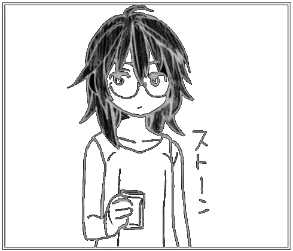

But your fingers texted gold and honey
Saturday, 28th June 2025
Previous | Next
Last night, I dreamed about her. I don't wanna think about her anymore, but she keeps appearing everywhere. I met her online a long time ago, during the pandemic, she made me a great company. Some months ago, I mailed her, after 4 years. We began to talk again, and we forged a beautiful bond once more, no matter how much time passed. She seemed cheerful, and during this time, I received a lot of compliments on her part. I started to develop some strong feelings towards her, I thought, that there was something special among us; she texted words, words that cannot be sent only to a friend. How deluded I was.
Last week, it was her birthday, so I decided to write a textwall, saluting and exposing a bit of my feelings. I got ghosted. I felt like shit. I begged for an explanation, and she said that she didn't feel anything for me, and she wasn't capable of. It hit me like a train filled with stones. All my plans were cut in half with a sickle. I said goodbye; I knew that if I continued talking, I'll be holding my weight with my hand onto the sharp side of a dagger. Now, I miss her a fucking lot. I want to text her, but I'll be losing my pride, and it's sure that nothing is going to change, no matter how hard I would try.
She looks exactly like Kitahara Aya on this panel of Onani Master Kurosawa. When I saw it, I missed her so bad.
It's been 3 weeks since I came from the city where I study to my house. I did Incredibly well with the exams and I promoted almost everything, so I have some spare time. But even so, I feel like shit.

During this time, I've been trying to kill this unrequited love. I tried listening to Have A Nice Life, other depressing music, reading a lot of manga, drinking, bike riding, and shutting in. Nothing really seems to work. I feel empty. I only met a couple of friends once; I wasn't that talkative, but I'm glad I've seen them. My phone's been dry as fuck.
I think that I wouldn't be rolling the dice of love for a long time, if it's not forever. Trying is failing, and failing hurts. I don't want to lose or be rejected anymore, so the best choice it's not to risk. "But you're missing it", yes, I may be missing on a lot of things, but I'd rather be safe than stepping on the same branch ever and ever again. There is not any other hand in this world that fits into mine.
Today, I was programming here and I suddenly sneezed pretty hard, it was so hard that it soaked my palm with blood. My nose started bleeding so freaking violently. I've got desperate, because my nose turned into a blood tap, pouring so much. I was scared, I run into my mother, and she helped me. It bled so hard, it was the first time that it bled from both nostrils at the same time. Now I'm good, but it was an ugly experience. I spent the rest of the day in bed, watching old Dross Rotzank's videos on YouTube.
Tomorrow I have to travel to the university again, to take my last evaluation session of this semester, it's about an oral defense of a minesweeper java game, lol. I know that I'm doing it perfectly, so I have this entire July free, because I promoted all my subjects.
P.S.: I hope anyone would get the The Jesus And Mary Chain pun on the title (ー_ー゛)